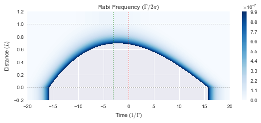

from maxwellbloch import mb_solve
import numpy as npN = 0.1
import matplotlib.pyplot as plt
%matplotlib inline
import seaborn as snsmb_solve_fwhm1_N01 = mb_solve.MBSolve().from_json('fast-light-fwhm1-N01.json')time _ = mb_solve_fwhm1_N01.mbsolve(recalc=False)Loaded tuple object.
CPU times: user 10 ms, sys: 23.3 ms, total: 33.3 ms
Wall time: 48.1 msprofile_in_fwhm1_N01 = np.abs(mb_solve_fwhm1_N01.Omegas_zt[0, 0])
peak_in_fwhm1_N01 = mb_solve_fwhm1_N01.tlist[np.argmax(profile_in_fwhm1_N01)]
print(peak_in_fwhm1_N01)
profile_out_fwhm1_N01 = np.abs(mb_solve_fwhm1_N01.Omegas_zt[0, -1])
peak_out_fwhm1_N01 = mb_solve_fwhm1_N01.tlist[np.argmax(profile_out_fwhm1_N01)]
print(peak_out_fwhm1_N01)0.0
-0.016fig = plt.figure(figsize=(8, 3))
ax = fig.add_subplot(111)
cmap_range = np.linspace(0.0, 1.0e-3, 11)
cf = ax.contourf(mb_solve_fwhm1_N01.tlist, mb_solve_fwhm1_N01.zlist,
np.abs(mb_solve_fwhm1_N01.Omegas_zt[0]/(2*np.pi)),
cmap_range, cmap=plt.cm.Blues)
ax.set_title('Rabi Frequency ($\Gamma / 2\pi $)')
ax.set_xlabel('Time ($1/\Gamma$)')
ax.set_ylabel('Distance ($L$)')
for y in [0.0, 1.0]:
ax.axhline(y, c='grey', lw=1.0, ls='dotted')
ax.axvline(peak_in_fwhm1_N01, c='red', lw=1.0, ls='dotted')
ax.axvline(peak_out_fwhm1_N01, c='green', lw=1.0, ls='dotted')
ax.set_xlim(-2, 2)
plt.colorbar(cf);N = 0.5
mb_solve_fwhm1_N05 = mb_solve.MBSolve().from_json('fast-light-fwhm1-N05.json')time _ = mb_solve_fwhm1_N05.mbsolve(recalc=False)Loaded tuple object.
CPU times: user 6.7 ms, sys: 18.7 ms, total: 25.4 ms
Wall time: 27.2 msprofile_in_fwhm1_N05 = np.abs(mb_solve_fwhm1_N05.Omegas_zt[0, 0])
peak_in_fwhm1_N05 = mb_solve_fwhm1_N05.tlist[np.argmax(profile_in_fwhm1_N05)]
print(peak_in_fwhm1_N05)
profile_out_fwhm1_N05 = np.abs(mb_solve_fwhm1_N05.Omegas_zt[0, -1])
peak_out_fwhm1_N05 = mb_solve_fwhm1_N05.tlist[np.argmax(profile_out_fwhm1_N05)]
print(peak_out_fwhm1_N05)0.0
-0.072fig = plt.figure(figsize=(8, 3))
ax = fig.add_subplot(111)
cmap_range = np.linspace(0.0, 1.0e-3, 11)
cf = ax.contourf(mb_solve_fwhm1_N05.tlist, mb_solve_fwhm1_N05.zlist,
np.abs(mb_solve_fwhm1_N05.Omegas_zt[0]/(2*np.pi)),
cmap_range, cmap=plt.cm.Blues)
ax.set_title('Rabi Frequency ($\Gamma / 2\pi $)')
ax.set_xlabel('Time ($1/\Gamma$)')
ax.set_ylabel('Distance ($L$)')
for y in [0.0, 1.0]:
ax.axhline(y, c='grey', lw=1.0, ls='dotted')
ax.axvline(peak_in_fwhm1_N05, c='red', lw=1.0, ls='dotted')
ax.axvline(peak_out_fwhm1_N05, c='green', lw=1.0, ls='dotted')
ax.set_xlim(-2, 2)
plt.colorbar(cf);N = 1
mb_solve_fwhm1_N1 = mb_solve.MBSolve().from_json('fast-light-fwhm1-N1.json')time Omegas_zt, states_zt = mb_solve_fwhm1_N1.mbsolve(recalc=False)Loaded tuple object.
CPU times: user 6.89 ms, sys: 17.8 ms, total: 24.7 ms
Wall time: 26.6 msprofile_in_fwhm1_N1 = np.real(mb_solve_fwhm1_N1.Omegas_zt[0, 0])
peak_in_fwhm1_N1 = mb_solve_fwhm1_N1.tlist[np.argmax(profile_in_fwhm1_N1)]
print(peak_in_fwhm1_N1)
profile_out_fwhm1_N1 = np.real(mb_solve_fwhm1_N1.Omegas_zt[0, -1])
peak_out_fwhm1_N1 = mb_solve_fwhm1_N1.tlist[np.argmax(profile_out_fwhm1_N1)]
print(peak_out_fwhm1_N1)0.0
-0.136fig = plt.figure(figsize=(8, 3))
ax = fig.add_subplot(111)
cmap_range = np.linspace(0.0, 1.0e-3, 11)
cf = ax.contourf(mb_solve_fwhm1_N1.tlist, mb_solve_fwhm1_N1.zlist,
np.abs(mb_solve_fwhm1_N1.Omegas_zt[0]/(2*np.pi)),
cmap_range, cmap=plt.cm.Blues)
ax.set_title('Rabi Frequency ($\Gamma / 2\pi $)')
ax.set_xlabel('Time ($1/\Gamma$)')
ax.set_ylabel('Distance ($L$)')
for y in [0.0, 1.0]:
ax.axhline(y, c='grey', lw=1.0, ls='dotted')
ax.axvline(peak_in_fwhm1_N1, c='red', lw=1.0, ls='dotted')
ax.axvline(peak_out_fwhm1_N1, c='green', lw=1.0, ls='dotted')
ax.set_xlim(-2, 2)
plt.colorbar(cf);fig = plt.figure(figsize=(8, 3))
ax = fig.add_subplot(111)
ax.plot(mb_solve_fwhm1_N1.tlist, profile_in_fwhm1_N1/np.max(profile_in_fwhm1_N1))
ax.plot(mb_solve_fwhm1_N1.tlist, profile_out_fwhm1_N1/np.max(profile_out_fwhm1_N1))N = 2
mb_solve_fwhm1_N2 = mb_solve.MBSolve().from_json('fast-light-fwhm1-N2.json')%time Omegas_zt, states_zt = mb_solve_fwhm1_N2.mbsolve(recalc=False)Loaded tuple object.
CPU times: user 6.1 ms, sys: 18.3 ms, total: 24.4 ms
Wall time: 25.5 msprofile_in_fwhm1_N2 = np.real(mb_solve_fwhm1_N2.Omegas_zt[0, 0])
peak_in_fwhm1_N2 = mb_solve_fwhm1_N2.tlist[np.argmax(profile_in_fwhm1_N2)]
print(peak_in_fwhm1_N2)
profile_out_fwhm1_N2 = np.real(mb_solve_fwhm1_N2.Omegas_zt[0, -1])
peak_out_fwhm1_N2 = mb_solve_fwhm1_N2.tlist[np.argmax(profile_out_fwhm1_N2)]
print(peak_out_fwhm1_N2)0.0
-0.252fig = plt.figure(figsize=(8, 3))
ax = fig.add_subplot(111)
cmap_range = np.linspace(-1.0e-3, 1.0e-3, 20)
cf = ax.contourf(mb_solve_fwhm1_N2.tlist, mb_solve_fwhm1_N2.zlist,
np.real(mb_solve_fwhm1_N2.Omegas_zt[0]/(2*np.pi)),
cmap_range, cmap=plt.cm.RdBu)
ax.set_title('Rabi Frequency ($\Gamma / 2\pi $)')
ax.set_xlabel('Time ($1/\Gamma$)')
ax.set_ylabel('Distance ($L$)')
for y in [0.0, 1.0]:
ax.axhline(y, c='grey', lw=1.0, ls='dotted')
ax.axvline(peak_in_fwhm1_N2, c='red', lw=1.0, ls='dotted')
ax.axvline(peak_out_fwhm1_N2, c='green', lw=1.0, ls='dotted')
# ax.set_xlim(-2, 2)
plt.colorbar(cf);from maxwellbloch import fixed
speed_of_light = 0.5 # [L Γ]
tlist_fixed_frame = fixed.t_list(mb_solve_fwhm1_N2, speed_of_light)
field_fixed_frame = fixed.rabi_freq(mb_solve_fwhm1_N2, 0, speed_of_light, part='real', interp_kind='cubic')fig = plt.figure(2, figsize=(8, 3))
ax = fig.add_subplot(111)
cmap_range = np.linspace(-1.0e-3, 1.0e-3, 20)
cf = ax.contourf(tlist_fixed_frame, mb_solve_fwhm1_N2.zlist,
field_fixed_frame/(2*np.pi),
cmap_range, cmap=plt.cm.RdBu)
ax.set_title('Rabi Frequency ($\Gamma / 2\pi $)')
ax.set_xlabel('Fixed Time $1/\Gamma$)')
ax.set_ylabel('Distance ($L$)')<matplotlib.text.Text at 0x113a69978>### N = 4
mb_solve_fwhm1_N4 = mb_solve.MBSolve().from_json('fast-light-fwhm1-N4.json')%time _ = mb_solve_fwhm1_N4.mbsolve(recalc=False)Loaded tuple object.
CPU times: user 5.93 ms, sys: 18.4 ms, total: 24.3 ms
Wall time: 24.6 msprofile_in_fwhm1_N4 = np.real(mb_solve_fwhm1_N4.Omegas_zt[0, 0])
peak_in_fwhm1_N4 = mb_solve_fwhm1_N4.tlist[np.argmax(profile_in_fwhm1_N4)]
print(peak_in_fwhm1_N4)
profile_out_fwhm1_N4 = np.real(mb_solve_fwhm1_N4.Omegas_zt[0, -1])
peak_out_fwhm1_N4 = mb_solve_fwhm1_N4.tlist[np.argmax(profile_out_fwhm1_N4)]
print(peak_out_fwhm1_N4)0.0
-0.448fig = plt.figure(figsize=(8, 3))
ax = fig.add_subplot(111)
cmap_range = np.linspace(0.0, 1.0e-3, 11)
cf = ax.contourf(mb_solve_fwhm1_N4.tlist, mb_solve_fwhm1_N4.zlist,
np.abs(mb_solve_fwhm1_N4.Omegas_zt[0]/(2*np.pi)),
cmap_range, cmap=plt.cm.Blues)
ax.set_title('Rabi Frequency ($\Gamma / 2\pi $)')
ax.set_xlabel('Time ($1/\Gamma$)')
ax.set_ylabel('Distance ($L$)')
for y in [0.0, 1.0]:
ax.axhline(y, c='grey', lw=1.0, ls='dotted')
ax.axvline(peak_in_fwhm1_N4, c='red', lw=1.0, ls='dotted')
ax.axvline(peak_out_fwhm1_N4, c='green', lw=1.0, ls='dotted')
# ax.set_xlim(-2, 2)
plt.colorbar(cf);
fig = plt.figure(figsize=(8, 3))
ax = fig.add_subplot(111)
ax.plot(mb_solve_fwhm1_N4.tlist, profile_in_fwhm1_N4/np.max(profile_in_fwhm1_N4))
ax.plot(mb_solve_fwhm1_N4.tlist, profile_out_fwhm1_N4/np.max(profile_out_fwhm1_N4))PLOT
N = np.array([0.1, 0.5, 1.0, 2.0, 4.0])
peaks_out = -np.array([peak_out_fwhm1_N01, peak_out_fwhm1_N05, peak_out_fwhm1_N1, peak_out_fwhm1_N2, peak_out_fwhm1_N4])fig = plt.figure(figsize=(8, 3))
plt.plot(N, peaks_out, marker='o')N = 4.5
mb_solve_fwhm1_N4_5 = mb_solve.MBSolve().from_json('fast-light-fwhm1-N4.5.json')%time _ = mb_solve_fwhm1_N4_5.mbsolve(recalc=False, pbar_chunk_size=2)Loaded tuple object.
CPU times: user 60 ms, sys: 236 ms, total: 296 ms
Wall time: 322 msprofile_in_fwhm1_N4_5 = np.abs(mb_solve_fwhm1_N4_5.Omegas_zt[0, 0])
peak_in_fwhm1_N4_5 = mb_solve_fwhm1_N4_5.tlist[np.argmax(profile_in_fwhm1_N4_5)]
print(peak_in_fwhm1_N4_5)
profile_out_fwhm1_N4_5 = np.abs(mb_solve_fwhm1_N4_5.Omegas_zt[0, -1])
peak_out_fwhm1_N4_5 = mb_solve_fwhm1_N4_5.tlist[np.argmax(profile_out_fwhm1_N4_5)]
print(peak_out_fwhm1_N4_5)0.0
0.2504fig = plt.figure(figsize=(8, 3))
ax = fig.add_subplot(111)
cmap_range = np.linspace(0.0, 1.0e-3, 101)
cf = ax.contourf(mb_solve_fwhm1_N4_5.tlist, mb_solve_fwhm1_N4_5.zlist,
np.abs(mb_solve_fwhm1_N4_5.Omegas_zt[0]/(2*np.pi)),
cmap_range, cmap=plt.cm.Blues)
ax.set_title('Rabi Frequency ($\Gamma / 2\pi $)')
ax.set_xlabel('Time ($1/\Gamma$)')
ax.set_ylabel('Distance ($L$)')
for y in [0.0, 1.0]:
ax.axhline(y, c='grey', lw=1.0, ls='dotted')
ax.axvline(peak_in_fwhm1_N4_5, c='red', lw=1.0, ls='dotted')
ax.axvline(peak_out_fwhm1_N4_5, c='green', lw=1.0, ls='dotted')
ax.set_xlim(-2, 2)
plt.colorbar(cf);Wide Pulses
mb_solve_fwhm10_N10 = mb_solve.MBSolve().from_json('fast-light-fwhm10-N10.json')%time _ = mb_solve_fwhm10_N10.mbsolve(recalc=False);Loaded tuple object.
CPU times: user 6.22 ms, sys: 19.2 ms, total: 25.4 ms
Wall time: 25.8 msprofile_in_fwhm10_N10 = np.abs(mb_solve_fwhm10_N10.Omegas_zt[0, 0])
peak_in_fwhm10_N10 = mb_solve_fwhm10_N10.tlist[np.argmax(profile_in_fwhm10_N10)]
print(peak_in_fwhm10_N10)
profile_out_fwhm10_N10 = np.abs(mb_solve_fwhm10_N10.Omegas_zt[0, -1])
peak_out_fwhm10_N10 = mb_solve_fwhm10_N10.tlist[np.argmax(profile_out_fwhm10_N10)]
print(peak_out_fwhm10_N10)0.0
-3.08fig = plt.figure(figsize=(8, 3))
ax = fig.add_subplot(111)
cmap_range = np.linspace(0.0, 1.0e-6, 101)
cf = ax.contourf(mb_solve_fwhm10_N10.tlist, mb_solve_fwhm10_N10.zlist,
np.abs(mb_solve_fwhm10_N10.Omegas_zt[0]/(2*np.pi)),
cmap_range, cmap=plt.cm.Blues)
ax.set_title('Rabi Frequency ($\Gamma / 2\pi $)')
ax.set_xlabel('Time ($1/\Gamma$)')
ax.set_ylabel('Distance ($L$)')
for y in [0.0, 1.0]:
ax.axhline(y, c='grey', lw=1.0, ls='dotted')
ax.axvline(peak_in_fwhm10_N10, c='red', lw=1.0, ls='dotted')
ax.axvline(peak_out_fwhm10_N10, c='green', lw=1.0, ls='dotted')
ax.set_xlim(-20, 20)
plt.colorbar(cf);
mb_solve_fwhm10_N20 = mb_solve.MBSolve().from_json('fast-light-fwhm10-N20.json')%time _ = mb_solve_fwhm10_N20.mbsolve(recalc=False)Loaded tuple object.
CPU times: user 49.1 ms, sys: 235 ms, total: 284 ms
Wall time: 314 msprofile_in_fwhm10_N20 = np.abs(mb_solve_fwhm10_N20.Omegas_zt[0, 0])
peak_in_fwhm10_N20 = mb_solve_fwhm10_N20.tlist[np.argmax(profile_in_fwhm10_N20)]
print(peak_in_fwhm10_N20)
profile_out_fwhm10_N20 = np.abs(mb_solve_fwhm10_N20.Omegas_zt[0, -1])
peak_out_fwhm10_N20 = mb_solve_fwhm10_N20.tlist[np.argmax(profile_out_fwhm10_N20)]
print(peak_out_fwhm10_N20)0.0
-5.68fig = plt.figure(figsize=(8, 3))
ax = fig.add_subplot(111)
cmap_range = np.linspace(0.0, 1.0e-3, 11)
cf = ax.contourf(mb_solve_fwhm10_N20.tlist, mb_solve_fwhm10_N20.zlist,
np.abs(mb_solve_fwhm10_N20.Omegas_zt[0]/(2*np.pi)),
cmap_range, cmap=plt.cm.Blues)
ax.set_title('Rabi Frequency ($\Gamma / 2\pi $)')
ax.set_xlabel('Time ($1/\Gamma$)')
ax.set_ylabel('Distance ($L$)')
for y in [0.0, 1.0]:
ax.axhline(y, c='grey', lw=1.0, ls='dotted')
ax.axvline(peak_in_fwhm10_N20, c='red', lw=1.0, ls='dotted')
ax.axvline(peak_out_fwhm10_N20, c='green', lw=1.0, ls='dotted')
ax.set_xlim(-20, 20)
plt.colorbar(cf);^ Try more t steps, this might work.
mb_solve_fwhm10_N01 = mb_solve.MBSolve().from_json('fast-light-fwhm10-N01.json')%time _ = mb_solve_fwhm10_N01.mbsolve(recalc=False)Loaded tuple object.
CPU times: user 9.18 ms, sys: 25.2 ms, total: 34.4 ms
Wall time: 37.3 msprofile_out_fwhm10_N01 = np.abs(mb_solve_fwhm10_N01.Omegas_zt[0, -1])
peak_out_fwhm10_N01 = mb_solve_fwhm10_N01.tlist[np.argmax(profile_out_fwhm10_N01)]
print(peak_out_fwhm10_N01)-0.04fig = plt.figure(figsize=(8, 3))
ax = fig.add_subplot(111)
cmap_range = np.linspace(0.0, 1.0e-3, 11)
cf = ax.contourf(mb_solve_fwhm10_N01.tlist, mb_solve_fwhm10_N01.zlist,
np.abs(mb_solve_fwhm10_N01.Omegas_zt[0]/(2*np.pi)),
cmap_range, cmap=plt.cm.Blues)
ax.set_title('Rabi Frequency ($\Gamma / 2\pi $)')
ax.set_xlabel('Time ($1/\Gamma$)')
ax.set_ylabel('Distance ($L$)')
for y in [0.0, 1.0]:
ax.axhline(y, c='grey', lw=1.0, ls='dotted')
# ax.axvline(peak_in_fwhm10_N20, c='red', lw=1.0, ls='dotted')
ax.axvline(peak_out_fwhm10_N01, c='green', lw=1.0, ls='dotted')
ax.set_xlim(-20, 20)
plt.colorbar(cf);mb_solve_fwhm10_N05 = mb_solve.MBSolve().from_json('fast-light-fwhm10-N05.json')%time _ = mb_solve_fwhm10_N05.mbsolve(recalc=False)Loaded tuple object.
CPU times: user 5.89 ms, sys: 20.3 ms, total: 26.2 ms
Wall time: 27.2 msprofile_out_fwhm10_N05 = np.abs(mb_solve_fwhm10_N05.Omegas_zt[0, -1])
peak_out_fwhm10_N05 = mb_solve_fwhm10_N01.tlist[np.argmax(profile_out_fwhm10_N05)]
print(peak_out_fwhm10_N05)-0.16fig = plt.figure(figsize=(8, 3))
ax = fig.add_subplot(111)
cmap_range = np.linspace(0.0, 1.0e-3, 11)
cf = ax.contourf(mb_solve_fwhm10_N05.tlist, mb_solve_fwhm10_N05.zlist,
np.abs(mb_solve_fwhm10_N05.Omegas_zt[0]/(2*np.pi)),
cmap_range, cmap=plt.cm.Blues)
ax.set_title('Rabi Frequency ($\Gamma / 2\pi $)')
ax.set_xlabel('Time ($1/\Gamma$)')
ax.set_ylabel('Distance ($L$)')
for y in [0.0, 1.0]:
ax.axhline(y, c='grey', lw=1.0, ls='dotted')
# ax.axvline(peak_in_fwhm10_N20, c='red', lw=1.0, ls='dotted')
ax.axvline(peak_out_fwhm10_N05, c='green', lw=1.0, ls='dotted')
ax.set_xlim(-20, 20)
plt.colorbar(cf);N = 1
mb_solve_fwhm10_N1 = mb_solve.MBSolve().from_json('fast-light-fwhm10-N1.json')%time _ = mb_solve_fwhm10_N1.mbsolve(recalc=False)Loaded tuple object.
CPU times: user 5.59 ms, sys: 18 ms, total: 23.6 ms
Wall time: 24.3 msprofile_out_fwhm10_N1 = np.abs(mb_solve_fwhm10_N1.Omegas_zt[0, -1])
peak_out_fwhm10_N1 = mb_solve_fwhm10_N1.tlist[np.argmax(profile_out_fwhm10_N1)]
print(peak_out_fwhm10_N1)-0.32fig = plt.figure(figsize=(8, 3))
ax = fig.add_subplot(111)
cmap_range = np.linspace(0.0, 1.0e-3, 11)
cf = ax.contourf(mb_solve_fwhm10_N1.tlist, mb_solve_fwhm10_N1.zlist,
np.abs(mb_solve_fwhm10_N1.Omegas_zt[0]/(2*np.pi)),
cmap_range, cmap=plt.cm.Blues)
ax.set_title('Rabi Frequency ($\Gamma / 2\pi $)')
ax.set_xlabel('Time ($1/\Gamma$)')
ax.set_ylabel('Distance ($L$)')
for y in [0.0, 1.0]:
ax.axhline(y, c='grey', lw=1.0, ls='dotted')
# ax.axvline(peak_in_fwhm10_N1, c='red', lw=1.0, ls='dotted')
ax.axvline(peak_out_fwhm10_N1, c='green', lw=1.0, ls='dotted')
ax.set_xlim(-20, 20)
plt.colorbar(cf);N = 5
mb_solve_fwhm10_N5 = mb_solve.MBSolve().from_json('fast-light-fwhm10-N5.json')%time _ = mb_solve_fwhm10_N5.mbsolve(recalc=False)Loaded tuple object.
CPU times: user 6.04 ms, sys: 18.2 ms, total: 24.3 ms
Wall time: 25.3 msprofile_in_fwhm10_N5 = np.real(mb_solve_fwhm10_N5.Omegas_zt[0, 0])
peak_in_fwhm10_N5 = mb_solve_fwhm10_N5.tlist[np.argmax(profile_in_fwhm10_N5)]
print(peak_in_fwhm10_N5)
profile_out_fwhm10_N5 = np.real(mb_solve_fwhm10_N5.Omegas_zt[0, -1])
peak_out_fwhm10_N5 = mb_solve_fwhm10_N5.tlist[np.argmax(profile_out_fwhm10_N5)]
print(np.max(profile_out_fwhm10_N5))
print(peak_out_fwhm10_N5)0.0
4.37241125569e-05
-1.56fig = plt.figure(figsize=(8, 3))
ax = fig.add_subplot(111)
ax.plot(mb_solve_fwhm10_N5.tlist, profile_in_fwhm10_N5/np.max(profile_in_fwhm10_N5))
ax.plot(mb_solve_fwhm10_N5.tlist, profile_out_fwhm10_N5/np.max(profile_out_fwhm10_N5))N = 12
mb_solve_fwhm10_N12 = mb_solve.MBSolve().from_json('fast-light-fwhm10-N12.json')%time _ = mb_solve_fwhm10_N12.mbsolve(recalc=False, pbar_chunk_size=2)Loaded tuple object.
CPU times: user 51.9 ms, sys: 225 ms, total: 277 ms
Wall time: 300 msprofile_out_fwhm10_N12 = np.abs(mb_solve_fwhm10_N12.Omegas_zt[0, -1])
peak_out_fwhm10_N12 = mb_solve_fwhm10_N12.tlist[np.argmax(profile_out_fwhm10_N12)]
print(peak_out_fwhm10_N12)-3.75N = 15
mb_solve_fwhm10_N15 = mb_solve.MBSolve().from_json('fast-light-fwhm10-N15.json')%time _ = mb_solve_fwhm10_N15.mbsolve(recalc=False, pbar_chunk_size=2)Loaded tuple object.
CPU times: user 77.1 ms, sys: 222 ms, total: 299 ms
Wall time: 376 msprofile_in_fwhm10_N15 = np.real(mb_solve_fwhm10_N15.Omegas_zt[0, 0])
peak_in_fwhm10_N15 = mb_solve_fwhm10_N15.tlist[np.argmax(profile_in_fwhm10_N15)]
print(peak_in_fwhm10_N15)
profile_out_fwhm10_N15 = np.real(mb_solve_fwhm10_N15.Omegas_zt[0, -1])
peak_out_fwhm10_N15 = mb_solve_fwhm10_N15.tlist[np.argmax(profile_out_fwhm10_N15)]
print(peak_out_fwhm10_N15)0.0
-4.68fig = plt.figure(figsize=(8, 3))
ax = fig.add_subplot(111)
ax.plot(mb_solve_fwhm10_N15.tlist, profile_in_fwhm10_N15/np.max(profile_in_fwhm10_N15))
ax.plot(mb_solve_fwhm10_N15.tlist, profile_out_fwhm10_N15/np.max(profile_out_fwhm10_N15))N = 20
mb_solve_fwhm10_N20 = mb_solve.MBSolve().from_json('fast-light-fwhm10-N20.json')%time _ = mb_solve_fwhm10_N20.mbsolve(recalc=False, pbar_chunk_size=2)Loaded tuple object.
CPU times: user 69.9 ms, sys: 196 ms, total: 266 ms
Wall time: 286 msprofile_in_fwhm10_N20 = np.real(mb_solve_fwhm10_N20.Omegas_zt[0, 0])
peak_in_fwhm10_N20 = mb_solve_fwhm10_N20.tlist[np.argmax(profile_in_fwhm10_N20)]
print(peak_in_fwhm10_N20)
profile_out_fwhm10_N20 = np.real(mb_solve_fwhm10_N20.Omegas_zt[0, -1])
peak_out_fwhm10_N20 = mb_solve_fwhm10_N20.tlist[np.argmax(profile_out_fwhm10_N20)]
print(np.max(profile_out_fwhm10_N20))
print(peak_out_fwhm10_N20)0.0
1.56090895713e-11
-5.68fig = plt.figure(figsize=(8, 3))
ax = fig.add_subplot(111)
ax.plot(mb_solve_fwhm10_N20.tlist, profile_in_fwhm10_N20/np.max(profile_in_fwhm10_N20))
ax.plot(mb_solve_fwhm10_N20.tlist, profile_out_fwhm10_N20/np.max(profile_out_fwhm10_N20))PLOT
N10 = np.array([0.1, 0.5, 1.0, 5.0, 10.0, 12.0, 15.0])
peaks_out_10 = -np.array([peak_out_fwhm10_N01, peak_out_fwhm10_N05, peak_out_fwhm10_N1, peak_out_fwhm10_N5,
peak_out_fwhm10_N10,
peak_out_fwhm10_N12, peak_out_fwhm10_N15])plt.plot(N10, peaks_out_10, marker='o')Plots together
fig = plt.figure(figsize=(8, 4))
ax = fig.add_subplot(111)
ax.plot(N, peaks_out, ls='-', marker='o', label='Pulse', clip_on=False)
ax.plot(N10, peaks_out_10/10, ls='-', marker='o', label='Longer pulse', clip_on=False)
ax.set_xlabel('Number density')
ax.set_ylabel('Pulse advancement in pulse widths')
ax.legend(loc=0)
fig.tight_layout()
fig.savefig('fast-light-fig-7.png');Narrow pulses
Narrower pulses suffer too much pulse distortion. Tried. Not useful.